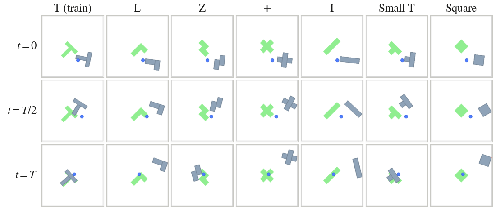
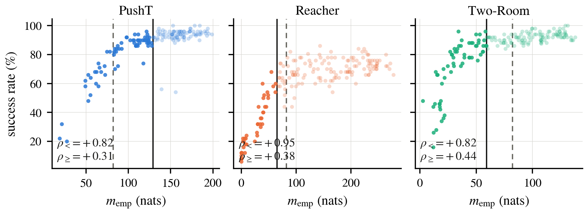
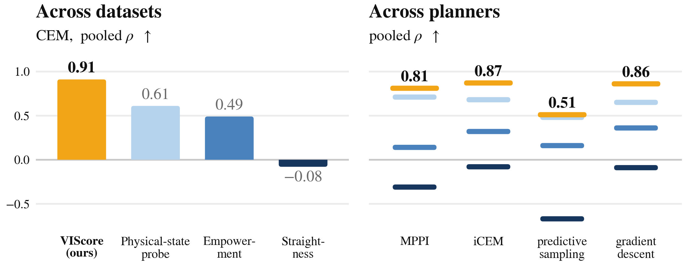

Key Findings
Accuracy of distribution matching, not flexibility, is what moves planning. SIGReg and VISReg target the same isotropic Gaussian. Reweighting VISReg's center/scale/shape terms is what helps self-supervised learning — \(32.0\to35.1\) on ImageNet-LT linear probing — and it buys nothing for planning. A finer approximation of the same target does: out-of-distribution success rises \(77.4\to82.0\) points while in-distribution success stays flat.
VIScore reads three aspects no previous metric measures. Given the encoded feature, it quantifies the reachability and capacity of the predictor, and the hallucination of the search-based planner. Straightness, physical-state probing and empowerment all read the encoded latent alone, so none of them sees the search that will actually run or how much error the task forgives.
It explains the success rate, and it is the only metric calibrated below a constant. Spearman \(\rho\) above \(+0.75\) on the cross-task pool against \(+0.49\) for raw empowerment, and the only metric whose calibration error stays under the constant-fit reference in every testing scenario — which is what makes a reading usable on a task that has no success labels yet.
Does a better latent distribution give better planning?
End-to-end latent world models need an explicit mechanism against collapse, and the usual answer is to regularize the embedding towards an isotropic Gaussian. Whether that property buys planning success has not been tested, so we test it with a controlled substitution: keep the architecture, the data and the predictor loss fixed, and replace only the regularizer.
SIGReg matches random one-dimensional projections of the embedding to a standard Gaussian through an Epps–Pulley statistic. VISReg targets the same prior but factorizes it into independently weighted center, scale and shape terms, which separates two axes: how the constraint is decomposed, and how accurately the distribution is actually matched.
\[\mathcal{L}_{\mathrm{center}}=\tfrac{1}{D}\|\mu\|_2^2,\qquad \mathcal{L}_{\mathrm{scale}}=\tfrac{1}{D}\sum_j\left(1-\sigma_j\right)^2,\qquad \mathcal{L}_{\mathrm{shape}}=\tfrac{1}{KB}\sum_{k}\left\|\operatorname{sort}(\widetilde{Z}w_k)-\mathbf{q}_{\mathcal{N}}\right\|_2^2\]
The two axes come apart. Component flexibility is what helps self-supervised learning — reweighting center/scale/shape to \(\{0.5,0.5,2\}\) lifts ImageNet-LT linear-probe accuracy from \(32.0\) to \(35.1\), most of it on the rare classes. It buys nothing for planning. What does move planning is the second axis: a larger batch, which makes the shape term a finer approximation of the target, raises out-of-distribution success from \(77.4\) to \(82.0\) points while in-distribution success stays flat.
Table 1. Out-of-distribution PushObj success (mean over shapes, three evaluation seeds). Flexibility is free; matching accuracy is not.
| Objective | d = 25 | d = 50 | d = 75 |
|---|---|---|---|
| LeWM (SIGReg, B = 128) | 79.1 | 61.8 | 44.3 |
| VIS-WM (VISReg, B = 128) | 77.4 | 59.7 | 41.8 |
| VIS-WM (VISReg, B = 256) | 82.0 | 62.2 | 44.3 |
| VIS-WM (VISReg, B = 512) | 82.0 | 62.0 | 45.6 |
Two things follow. A latent-space property that is demonstrably good in one setting does not transfer to planning by itself, so planning quality has to be measured on the planning pipeline — which is what the rest of this page is about. And single-seed evaluation is not enough to see any of this: under one seed VIS-WM appears to beat LeWM outright, and under three fresh seeds the two are indistinguishable in distribution.
Where the advantage does and does not hold. On six unseen object shapes the apparent gain survives only at the shortest horizon, and the matched-batch control above traces it to batch size acting as a hidden regularization-strength knob for VISReg rather than to the objective itself. Under the conventional single-seed protocol VIS-WM looks ahead of LeWorldModel; under three fresh seeds the two objectives become indistinguishable — a finding about the protocol rather than about either objective.

Why not just run the planner?
Selecting a latent world model means training it, then running model-predictive control for 50 episodes and reading a success rate. That is expensive, it is noisy at a single evaluation seed, and it answers only one question: whether this checkpoint plans well. It never says which part is broken — the encoder, the predictor, or the interaction between the predictor and the search.
The diagnostics in common use do not fill the gap. Straightness of latent trajectories changes sign across tasks (\(+0.51/+0.13/-0.67\) on PushT/Reacher/Two-Room), so it cannot be read as quality. A physical-state probe measures perception, which is necessary but far from sufficient. Latent empowerment is strongly associated with success within a task, but it is measured in nats whose meaning does not transfer: pooled across tasks it collapses, and on converged checkpoints it actively mis-orders them.
The problem with current metrics
A single planning attempt passes through four stages, and it fails if any one of them fails: the vision encoder turns pixels into \(z_t\); the predictor rolls \(z\) forward under a candidate action sequence; the planner searches that space for a sequence whose imagined outcome looks good; and the task tolerance grades whether the state actually reached counts as success. A diagnostic that measures a subset cannot tell a healthy model from one that will fail, because the stage it does not look at is exactly where the failure may sit.
Table 2. What each diagnostic reads. Every existing metric stops at the first two stages: none of them looks at the search that will actually be run, or at how much error the task forgives.
| Diagnostic | encoder | predictor | planner | task tolerance |
|---|---|---|---|---|
| Straightness — geometry of latent trajectories | ✓ | — | — | — |
| Physical-state probe — is the state decodable from \(z_t\)? | ✓ | — | — | — |
| Empowerment — capacity from actions to futures | ✓ | ✓ | — | — |
| VIScore | ✓ | ✓ | ✓ | ✓ |
The two uncovered stages are not details. A predictor accurate to a fixed latent distance is harmless for coarse navigation and fatal for precise manipulation — that is the tolerance stage. And a latent landscape can be informative yet still contain optima that the search will prefer over the action that actually succeeds — that is the planner stage. Both are measurable, and measuring them is what separates VIScore from the three diagnostics above.
What is missing is a reading that is anchored to the task. The same absolute latent error is harmless for coarse navigation and fatal for manipulation, so a diagnostic has to be expressed relative to the ball the environment’s own success criterion grades on.
VIScore: Veracity × Influence × Sobriety
Predictor-based planning needs three conditions to hold at once: the predictor must roll the latent state forward accurately enough for the task; different actions must produce sufficiently distinguishable futures; and the planner must not be able to fabricate candidates it merely believes are better than the data’s own actions. We call these veracity, influence and sobriety, and multiply them because they are prerequisites — the weakest unmet one dominates:
\[\mathrm{VIS} \;=\; \underbrace{\operatorname{erf}\!\left(\frac{d_{\mathrm{tol}}/2}{\sqrt{2}\,\sigma_{\mathrm{roll}}}\right)}_{\text{veracity}} \;\cdot\; \underbrace{\min\!\left(\frac{m_{\mathrm{emp}}}{\tau},\,1\right)}_{\text{influence}} \;\cdot\; \underbrace{(1-\hat p)}_{\text{sobriety}}\]
Veracity — does the rollout stay inside the tolerance?
\(\sigma_{\mathrm{roll}}\) is the RMS terminal error of an \(H\)-step open-loop rollout, the regime a planner actually rolls out in, and \(d_{\mathrm{tol}}\) is the latent image of the environment’s success tolerance — measured on probe pairs whose graded physical displacement already equals one tolerance, not extrapolated from a local slope. Only the ratio enters, so rescaling the latent leaves veracity unchanged and models of different latent dimension remain comparable.
Influence — do actions command distinguishable futures, enough for this task?
\[m_{\mathrm{emp}} = \tfrac12\log\det\!\left(I + \hat E_H^{-1}\hat S\right)\] with \(\hat S\) the covariance of \(H\)-step terminal displacements induced by action perturbations and \(\hat E_H\) the predictor’s own residual covariance rescaled to the error the rollout accumulates. This is the Gaussian channel capacity from actions to futures, invariant to any invertible linear reparameterization of the latent. It is then capped at \(\tau=82\) nats, because capacity stops buying success past a knee:

Sobriety — can a search exploit the landscape?
At each of \(K=64\) expert anchors the goal is the future the recorded action reached, so the expert’s own action is a known-good plan. A mini-CEM searches for a lower imagined cost, and sobriety counts how often it wins: \[\hat p=\frac{1}{K}\sum_{k=1}^{K}\mathbb{1}\!\left[J(a^*_k) > J(a^{\mathrm{cem}}_k)\right], \qquad \mathrm{sobriety}=1-\hat p\] Every anchor the search wins is an exploitable hole: the planner will be steered by a hallucinated improvement. Only the sign of each gap enters, which is what makes the probe cheap — \(64\times512\) rollouts, no environment.
from viscore import score_checkpoint # pip install -e .
f = score_checkpoint("run/lewm_epoch_7_object.ckpt",
"probes/probe_pusht.npz", task="pusht")
# VIS 0.7213
# veracity 0.9014 d_tol 4.37 sigma_roll 1.79
# influence 1.0000 m_emp 147.3 / tau 82 nats [saturated]
# sobriety 0.8003 p_hat 0.200Scoring a world model from another codebase needs three methods — encode, action_embed, predict_next — and nothing else; adding a task means declaring its success tolerance, read off the environment source rather than tuned against success labels.
Results

Association with planning success
Within each task VIScore is comparable to raw empowerment and ahead of both representation diagnostics. The two instruments separate on the cross-task axis: pooled correlation and cross-task calibration error, where a metric measured in task-specific units cannot transfer. On the pre-registered terminal set of converged checkpoints, raw empowerment’s pooled correlation is negative — worse than using no metric at all — while VIScore predicts a held-out task’s success to within 4 points.
Table 3. Within-task Spearman \(\rho\) with planning success, pooled \(\rho\), and cross-task calibration error in success points (leave-one-task-out isotonic fit; lower is better). The split is at the level of the training run: every constant is fitted on the development pool, and no checkpoint in the test pools comes from a run used to choose one. Cube is parenthesized and excluded from pooled and calibration — its label spread does not exceed its own binomial standard error, so nothing there is rankable by any metric.
| Metric | PushT | Reacher | Two-Room | Cube | Pooled | Calib. err. |
|---|---|---|---|---|---|---|
| development pool (137 checkpoints, 14 runs) | ||||||
| Straightness | +0.51 | +0.13 | −0.67 | (+0.01) | +0.33 | 40.4 |
| Physical-state probe (\(R^2\)) | +0.41 | +0.74 | +0.57 | (−0.05) | +0.77 | 14.5 |
| Empowerment \(m_{\mathrm{emp}}\) | +0.82 | +0.86 | +0.71 | (−0.18) | +0.40 | 23.1 |
| VIScore | +0.80 | +0.83 | +0.71 | (−0.29) | +0.88 | 10.2 |
| Ref.: constant predictor | 24.4 | |||||
| held-out checkpoints — runs disjoint from development (103 checkpoints, 33 runs, three evaluation seeds each) | ||||||
| Straightness | +0.38 | −0.81 | −0.74 | — | −0.08 | 19.8 |
| Physical-state probe (\(R^2\)) | +0.38 | +0.65 | +0.71 | — | +0.61 | 27.6 |
| Empowerment \(m_{\mathrm{emp}}\) | +0.73 | +0.82 | +0.86 | — | +0.49 | 15.6 |
| VIScore | +0.84 | +0.72 | +0.83 | — | +0.91 | 7.0 |
| Ref.: constant predictor | 18.2 | |||||
| held-out methods — four world-modeling methods, frozen development calibration (23 checkpoints) | ||||||
| Straightness | — | — | — | — | +0.22 | 17.4 |
| Physical-state probe (\(R^2\)) | — | — | — | — | +0.32 | 16.1 |
| Empowerment \(m_{\mathrm{emp}}\) | — | — | — | — | +0.12 | 12.0 |
| VIScore | — | — | — | — | +0.75 | 8.3 |
| Ref.: constant predictor | 11.3 | |||||
| held-out dataset — the unseen MAZE task, frozen calibration (20 checkpoints, 2 runs) | ||||||
| Straightness | — | — | — | — | +0.66 | 31.2 |
| Physical-state probe (\(R^2\)) | — | — | — | — | +0.75 | 45.4 |
| Empowerment \(m_{\mathrm{emp}}\) | — | — | — | — | +0.87 | 9.2 |
| VIScore | — | — | — | — | +0.87 | 11.5 |
| Ref.: constant predictor | 41.7 | |||||
Which factor binds, and where
The product is the summary; the factors are the diagnosis. No single factor dominates every distribution shift, and the strongest one changes with the regime — so a metric that reports only its product hides the part a practitioner needs.
Table 4. Factor ablation: pooled \(\rho\) / calibration error per pool. Influence goes silent where capacity has saturated (numerically \(1\) for every PushT checkpoint on the terminal pool, hence \(-0.01\)) and inverts on held-out methods; veracity mis-calibrates on the held-out dataset. The fixed product never falls below \(+0.66\) on any pool.
| Pool (n / runs) | VIS = V·I·S | V veracity | I influence | S sobriety | Ref. |
|---|---|---|---|---|---|
| development (137/14) | +0.88 / 10.2 | +0.80 / 12.4 | +0.54 / 21.9 | +0.89 / 9.3 | 24.4 |
| held-out ckpt (103/33) | +0.91 / 7.0 | +0.81 / 12.7 | +0.65 / 14.0 | +0.89 / 7.3 | 18.2 |
| held-out method (23/23) | +0.75 / 8.3 | +0.62 / 10.4 | +0.09 / 12.2 | +0.68 / 8.9 | 11.3 |
| held-out dataset (20/2) | +0.87 / 11.5 | +0.85 / 31.9 | +0.87 / 9.4 | +0.88 / 8.3 | 41.7 |
Not an artifact of CEM
Sobriety contains a search by construction, which raises the question of whether the score is specific to CEM. Keeping the checkpoint, goals, episode count and planning cost fixed and replacing only the optimizer, VIScore keeps positive within-task association in all 18 planner × task cells (\(+0.29\) to \(+0.91\), median \(+0.67\)), and it does not decay as the planner weakens: the rank correlation between a planner’s success deficit against CEM and its within-task \(\rho\) is \(+0.07\). Predictive sampling scores \(43.3\) on PushT against CEM’s \(84.7\), and VIScore still ranks that task’s checkpoints at \(+0.76\) — a planner that finds much worse plans still finds better plans with a better model.
What the score does not claim
These are measured boundaries, not caveats added for safety:
- Search-based planning only. An amortized policy — goal-conditioned inverse dynamics, behaviour cloning — never runs a search, so sobriety has no estimand, and its success was measured to be independent of rollout fidelity. The released code can score any subset of the factors, but a partial score is a description of the model, not a validated predictor of that policy’s success.
- Discrete-mode success is out of scope. Cube succeeds only if the gripper enters a closed mode on the block, a discrete transition none of the three continuous factors represents; its influence factor reads exactly \(1\) on every checkpoint. We report it as a missing axis, not a verdict.
Conclusion
VIScore shows that latent world-model quality for planning decomposes into three measurable prerequisites, and that anchoring each of them to the task’s own success tolerance is what makes readings transfer where quantities in nats do not. Because it costs seconds rather than GPU-hours and names the binding factor rather than only ranking checkpoints, it is usable both for model selection and for deciding what to fix — and its factor decomposition is what let us find that a reported difference between two regularizers was a batch-size knob rather than the objective.
Everything needed to check this is released: the code, the checkpoints organized by evaluation pool, and the derived quantities that let the paper’s tables be recomputed on a CPU in seconds, with no GPU, dataset or checkpoint download.
Citation
@article{wu2026viscore,
title = {VIScore: Diagnosing Planning-Relevant Quality in Latent World Models},
author = {Wu, Haiyu and Balestriero, Randall and Levine, Morgan},
journal = {arXiv preprint arXiv:2608.11174},
year = {2026},
eprint = {2608.11174},
archivePrefix = {arXiv}
}